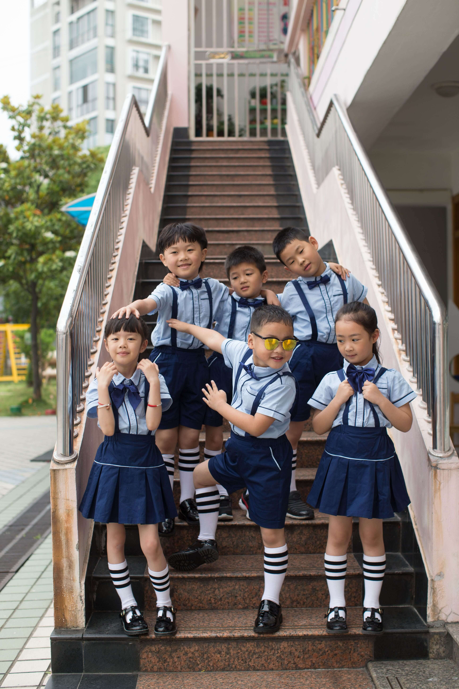
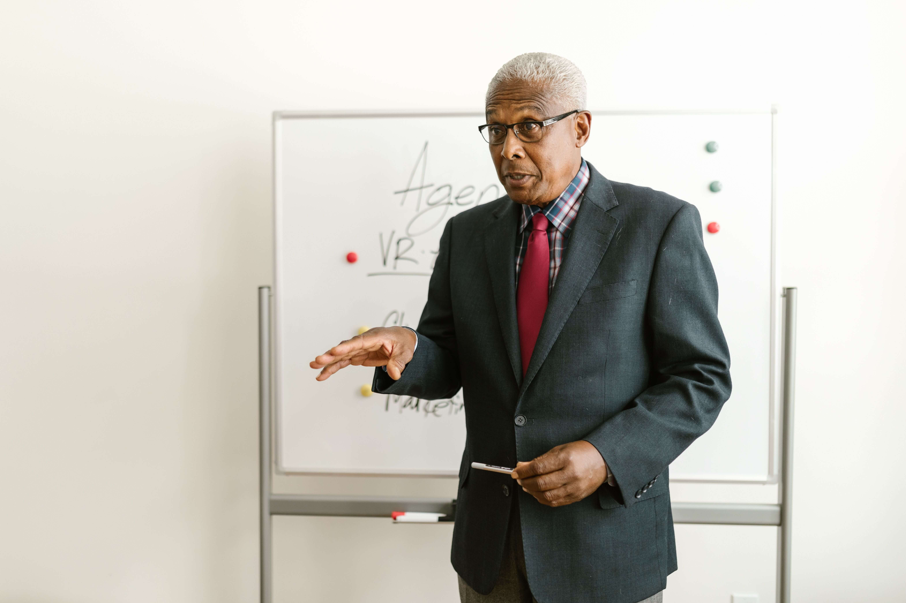

Lydia Bannerman is the visionary founder of Springwell International School, driven by a deep passion for transforming lives through quality education. Her vision is to create a school where every child receives not only excellent academic instruction but also the guidance, confidence, and values needed to become a well-rounded individual. With a strong commitment to educational excellence and child development, Lydia Bannerman established Springwell International School to provide an environment where curiosity is encouraged, talents are nurtured, and every learner is inspired to achieve their highest potential. Her leadership is built on integrity, compassion, innovation, and a genuine desire to make a lasting impact on future generations. Through her dedication, Springwell International School continues to grow as a center of excellence, shaping young minds and preparing students to become confident leaders and responsible global citizens.

Established in 2010, Springwell International School is a leading educational institution committed to providing quality, holistic education that inspires academic excellence, character development, and lifelong learning. Since its inception, the school has been dedicated to nurturing young minds in a safe, inclusive, and stimulating environment where every child is encouraged to reach their full potential. At Springwell International School, we believe that education extends beyond the classroom. Our curriculum is designed to foster critical thinking, creativity, leadership, and innovation while instilling values such as integrity, respect, responsibility, and compassion. Through a team of dedicated educators and modern teaching practices, we prepare students to excel academically and become confident, responsible global citizens. Over the years, Springwell International School has built a reputation for excellence by maintaining high academic standards and promoting the all-round development of every learner. We value strong partnerships with parents and the wider community, recognizing that education is a shared responsibility that shapes the future of our children.

Kenneth Dadzie is the dedicated Headmaster of Springwell International School, bringing a wealth of experience, strong leadership, and a passion for educational excellence. He is committed to creating a positive and inclusive school culture where every student is encouraged to achieve academic success while developing strong character and leadership skills. As Headmaster, Kenneth Dadzie works closely with teachers, parents, and the school community to ensure that Springwell International School maintains high standards of teaching, learning, and student welfare. He believes that education should empower learners to think critically, embrace innovation, and contribute positively to society. Guided by integrity, professionalism, and a genuine commitment to student success, Kenneth Dadzie continues to inspire both staff and students to pursue excellence in all they do. His vision is to build a learning environment where every child feels valued, supported, and prepared to thrive in a rapidly changing world.